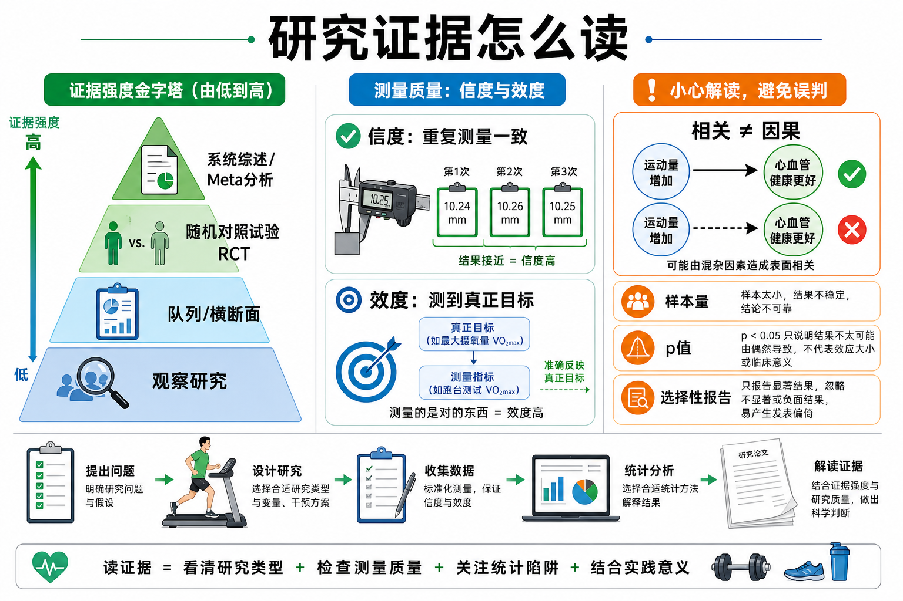

Day 7 · 研究方法与统计学循证基础
一句话总结
读研究像验收一台训练器械: 先看它是不是测得稳，再看它是不是测得准，最后看研究设计能不能支持因果。只看到 p<0.05 或一张漂亮图，不能直接变成训练结论。

核心要点
-
信度: 重复测量结果是否一致，像同一把尺子每次量都接近。
字面意思
信度 = reliability，重点是“可靠、稳定”。同一个人、同一个测试、条件接近时，结果不应忽高忽低。
考试指标NSCA 常用 ICC 组内相关系数判断一致性。粗略记法: ICC 越接近 1 越稳定，>0.75 通常算良好。
训练例子如果皮褶厚度今天 12 mm、明天 19 mm、后天 11 mm，但饮食训练没大变，这个测量流程信度差。问题可能是测量点、夹持力度或操作者不一致。
常见误解❌以为设备高级就一定可靠。✅其实高级设备也要标准化流程，否则信度仍然差。
-
效度: 测量是否真的测到目标，像靶心打得准不准。
字面意思
效度 = validity，重点是“有效、准确”。一个测试可以很稳定，但稳定地测错方向。
三类常见效度
训练含义类型 大白话 例子 内容效度 内容覆盖目标范围 健身理论考试不能只考营养，必须覆盖动作、生理、评估等内容。 结构效度 测到抽象能力本身 “核心稳定性测试”要真的反映抗旋转、抗伸展等能力。 效标效度 和金标准或结果对得上 心肺测试结果应与 VO₂max 或比赛表现有合理关系。 体重秤测体重信度可以很高，但它不是体脂率的高效度测量。减脂客户只看体重，可能错过肌肉增加、体水变化和围度变化。
-
相关性 vs 因果: 两件事一起变化，不代表一件导致另一件。
字面意思
相关 = A 和 B 同时变化。因果 = A 的变化真的造成 B 的变化。两者差一层“排除其他解释”的证据。
大白话类比夏天冰淇淋销量和溺水人数都上升，但冰淇淋不是溺水原因。背后共同因素是天气热、人们更常游泳。
训练例子研究发现“练得多的人蛋白粉喝得多”，只能说相关。也可能是训练经验、总蛋白摄入、睡眠、总热量和计划质量共同影响增肌。
考试抓手只有能控制干扰因素并操纵变量的实验设计，尤其随机对照试验 RCT，才更有资格讨论因果。
-
RCT: 随机对照试验是判断因果更强的设计，不是所有研究都能做到。
字面意思
RCT = Randomized Controlled Trial，中文是随机对照试验。随机分组减少初始差异，对照组帮助判断干预是否真有额外效果。
为什么影响训练判断假设研究想看“补剂 X 是否提高卧推”。RCT 会把相似人群随机分到补剂组和安慰剂组，并尽量控制训练计划、热量、蛋白质和睡眠。
局限RCT 成本高、周期短、样本可能不代表真实健身房人群。它证据强，但仍要看样本、干预时长、依从性和结局指标。
-
证据等级: 系统综述/Meta 分析通常更强，但质量取决于纳入研究。
底层逻辑
单项研究像一张照片，系统综述像把许多照片整理成相册，Meta 分析还会用统计方法合并效果量。
不要机械迷信高等级证据不等于永远正确。若纳入研究本身样本小、方法差、偏倚大，合并结果也会被污染。
实用读法先看研究问题是否和你的客户一致: 人群、训练水平、年龄、性别、干预周期、训练目标是否匹配。再看结果能不能落地。
-
p 值: p<0.05 只说明结果“不太像纯偶然”，不说明效果一定大。
字面意思
p 值是“如果原本没有真实差异，观察到当前或更极端结果的概率”。它不是“这个结论有 95% 概率正确”。
大白话类比p 值像报警器。报警说明值得检查，但不能告诉你火有多大，也不能保证真的着火。
训练含义样本很大时，极小差异也可能显著；样本很小时，实际有用的差异也可能不显著。读训练研究要同时看效果量、置信区间和实际意义。
-
统计陷阱: 小样本、选择性报告和混杂因素会让结论看起来比实际更强。
拆开看行动建议
样本量小
像少数人投票波动大，极端个体容易拉偏平均值。
选择性报告
像只晒好成绩只报告显著指标，隐藏无效或负面结果。
混杂因素
像没控变量睡眠、热量、训练经验可能才是真正差异来源。
看到“某方法提升 30%”时，先问三句: 研究对象是谁？对照组是什么？结果指标有实际训练意义吗？
常见误区
❌很多人以为“相关显著”就是“造成结果”。✅其实相关只能提示线索，不能自动排除共同原因和反向因果。
❌很多人以为 p<0.05 就代表训练效果很大。✅其实还要看效果量、置信区间、样本和实际意义。
❌很多人以为 Meta 分析永远最高级。✅其实它只是整合工具，纳入研究质量差时，结论仍可能不稳。
记忆口诀
先问稳不稳，再问准不准；相关别当因果，p 值别当效果；样本、对照、真实场景，三关过后再上训练。
翻转卡复习
实操关联
- 增肌: 看到“某训练法显著增肌”，先看受试者是否新手。新手几乎练什么都进步，不能直接套给高级训练者。
- 减脂: 体重下降研究要检查热量控制。若饮食不同，不能把效果都归功于训练方式。
- 爆发: 跳跃、冲刺研究要看测试信度。测试动作不标准，0.02 秒或 2 cm 差异可能只是测量噪声。
- 耐力: 心肺研究要看效度。用短问卷估 VO₂max，不等于真实气体代谢测试。
- 康复: 疼痛评分很主观，需结合功能测试、活动范围和复测一致性，不要只看单次分数。
- 备考: NSCA 摘要题先识别研究设计，再判断能否下因果结论，最后找统计陷阱。